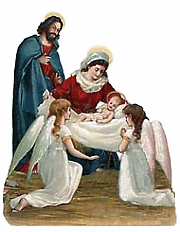
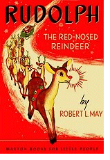

Why we kiss under the mistletoe...and other Christmas traditions.
» Go Back to Main Page «
When was the first Christmas card sent? Why do we kiss under the mistletoe? Learn the origins of Christmas and fun facts about some of our favorite christmas traditions and symbols.
There are lots of Christmas traditions that are practiced by a number of countries all over the world during the holiday season. These traditions can be as diverse as the culture and religious practices of each and every country in the world.
Read about some of the most common christmas traditions here.
Origins of Christmas
From the Old English ‘Cristes Mæsse’ ~ meaning the ‘mass of Christ’ ~ the story of Christmas begins with the birth of a babe in Bethlehem.
It is believed that Christ was born on the 25th, although the exact month is unknown. December was likely chosen so the Catholic Church could compete with rival pagan rituals held at that time of year and because of its closeness with the winter solstice in the Northern hemisphere, a traditional time of celebration among many ancient cultures.
Luke, Chapter Two
And it came to pass in those days, that there went out a decree from Caesar Augustus, that all the world should be taxed. (And this taxing was first made when Cyrenius was governor of Syria.) And all went to be taxed, every one into his own city. And Joseph also went up from Galilee, out of the city of Nazareth, into Judaea, unto the city of David, which is called Bethlehem; (because he was of the house and lineage of David:) To be taxed with Mary his espoused wife, being great with child. And so it was, that, while they were there, the days were accomplished that she should be delivered. And she brought forth her firstborn son, and wrapped him in swaddling clothes, and laid him in a manger; because there was no room for them in the inn.
And there were in the same country shepherds abiding in the field, keeping watch over their flock by night. And, lo, the angel of the Lord came upon them, and the glory of the Lord shone round about them: and they were sore afraid. And the angel said unto them, “Fear not: for, behold, I bring you good tidings of great joy, which shall be to all people. For unto you is born this day in the city of David a Saviour, which is Christ the Lord. And this shall be a sign unto you; Ye shall find the babe wrapped in swaddling clothes, lying in a manger.” And suddenly there was with the angel a multitude of the heavenly host praising God, and saying, “Glory to God in the highest, and on earth peace, good will toward men.”
<Home Page> <Top of Page>Santa Claus
The origin of Santa Claus begins in the 4th century with Saint Nicholas, Bishop of Myra, an area in present day Turkey. By all accounts St. Nicholas was a generous man, particularly devoted to children. After his death around 340 A.D. he was buried in Myra, but in 1087 Italian sailors purportedly stole his remains and removed them to Bari, Italy, greatly increasing St. Nicholas’ popularity throughout Europe.
His kindness and reputation for generosity gave rise to claims he that he could perform miracles and devotion to him increased. St. Nicholas became the patron saint of Russia, where he was known by his red cape, flowing white beard, and bishop’s mitre.
In Greece, he is the patron saint of sailors, in France he was the patron of lawyers, and in Belgium the patron of children and travellers. Thousands of churches across Europe were dedicated to him and some time around the 12th century an official church holiday was created in his honor. The Feast of St. Nicholas was celebrated December 6 and the day was marked by gift-giving and charity.
After the Reformation, European followers of St. Nicholas dwindled, but the legend was kept alive in Holland where the Dutch spelling of his name Sint Nikolaas was eventually transformed to Sinterklaas. Dutch children would leave their wooden shoes by the fireplace, and Sinterklaas would reward good children by placing treats in their shoes. Dutch colonists brought brought this tradition with them to America in the 17th century and here the Anglican name of Santa Claus emerged.
In 1822 Clement C. Moore composed the poem "A Visit From Saint Nicholas", published as The Night Before Christmas as a gift for his children. In it, he portrays Santa Claus:
He had a broad face and a little round belly,
That shook when he laughed, like a bowl full of jelly,
He was chubby and plump, a right jolly old elf,
And I laughed when I saw him, in spite of myself;
A wink of his eye and a twist of his head
Soon gave me to know I had nothing to dread.
Other countries feature different gift-bearers for the Christmas or Advent season: La Befana in Italy ~ The Three Kings in Spain, Puerto Rico, and Mexico ~ Christkindl or the Christ Child in Switzerland and Austria ~ Father Christmas in England ~ and Pere Noël, Father Christmas or the Christ Child in France. Still, the figure of Santa Claus as a jolly, benevolent, plump man in a red suit described in Moore’s poem remains with us today and is recognized by children and adults alike around the world.
<Home Page> <Top of Page>Christmas Trees
In 16th-century Germany fir trees were decorated, both indoors and out, with apples, roses, gilded candies, and colored paper. In the Middle Ages, a popular religous play depicted the story of Adam and Eve’s expulsion from the Garden of Eden.
A fir tree hung with apples was used to symbolize the Garden of Eden — the Paradise Tree. The play ended with the prophecy of a saviour coming, and so was often performed during the Advent season.
It is held that Protestant reformer Martin Luther first adorned trees with light. While coming home one December evening, the beauty of the stars shining through the branches of a fir inspired him to recreate the effect by placing candles on the branches of a small fir tree inside his home
The Christmas Tree was brought to England by Queen Victoria’s husband, Prince Albert from his native Germany. The famous Illustrated News etching in 1848, featuring the Royal Family of Victoria, Albert and their children gathered around a Christmas tree in Windsor Castle, popularized the tree throughout Victorian England. Brought to America by the Pennsylvania Germans, the Christmas tree became by the late 19th century.
<Home Page> <Top of Page>Focus on Christmas Traditions in US
The variations of the Christmas traditions of USA equal the number active cultures that have settled in the land. These cultural contributions were given a new lease of life by creative artists, authors, poets and songwriters, and it was melded together by the power of secular and commercialized media in record companies, radio stations, television, cinemas and now the internet. The unwritten law of media is the presentation of a seemingly uniform celebration of the Christmas traditions of USA. This is responsible for the world wide acceptance of a universal Christmas image which they get from the media. Nevertheless, the celebrations are peculiar to each region.
Christmas Stockings
According to legend, a kindly nobleman grew despondent over the death of his beloved wife and foolishly squandered his fortune. This left his three young daughters without dowries and thus facing a life of spinsterhood.
The generous St. Nicholas, hearing of the girls’ plight, set forth to help. Wishing to remain anonymous, he rode his white horse by the nobleman’s house and threw three small pouches of gold coins down the chimney where they were fortuitously captured by the stockings the young women had hung by the fireplace to dry.
<Home Page> <Top of Page>Mistletoe
Mistletoe was used by Druid priests 200 years before the birth of Christ in their winter celebrations. They revered the plant since it had no roots yet remained green during the cold months of winter.
The ancient Celtics believed mistletoe to have magical healing powers and used it as an antidote for poison, infertility, and to ward of evil spirits. The plant was also seen as a symbol of peace, and it is said that among Romans, enemies who met under mistletoe would lay down their weapons and embrace.
Scandanavians associated the plant with Frigga, their goddess of love, and it may be from this that we derive the custom of kissing under the mistletoe. Those who kissed under the mistletoe had the promise of happiness and good luck in the following year.
<Home Page> <Top of Page>Holly, Ivy and Greenery
In Northern Europe Christmas occurred during the middle of winter, when ghosts and demons could be heard howling in the winter winds. Boughs of holly, believed to have magical powers since they remained green through the harsh winter, were often placed over the doors of homes to drive evil away. Greenery was also brought indoors to freshen the air and brighten the mood during the long, dreary winter.
Legend also has it that holly sprang from the footsteps of Christ as he walked the earth. The pointed leaves were said to represent the crown of thorns Christ wore while on the cross and the red berries symbolized the blood he shed.
<Home Page> <Top of Page>Poinsettias
A native Mexican plant, poinsettias were named after Joel R. Poinsett, U.S. ambassador to Mexico who brought the plant to America in 1828. Poinsettias were likely used by Mexican Franciscans in their 17th century Christmas celebrations. One legend has it that a young Mexican boy, on his way to visit the village Nativity scene, realized he had no gift for the Christ child. He gathered pretty green branches from along the road and brought them to the church. Though the other children mocked him, when the leaves were laid at the manger, a beautiful star-shaped flower appeared on each branch. The bright red petals, often mistaken for flowers, are actually the upper leaves of the plant.
<Home Page> <Top of Page>The Candy cane
It was not long after Europeans began using Christmas trees that special decorations were used to adorn them. Food items, such as candies and cookies, were used predominately and straight white candy sticks were one of the confections used as ornamentation. Legend has it that during the 17th century, craftsmen created the white sticks of candy in the shape of shephreds’ crooks at the suggestion of the choirmaster at the Cologne Cathedral in Germany.
The candy treats were given to children to keep them quiet during ceremonies at the living creche, or Nativity scene, and the custom of passing out the candy crooks at such ceremonies soon spread throughout Europe.
According to the National Confectioner’s Association, in 1847 German immigrant August Imgard used the candy cane to decorate a Christmas tree in Wooster, Ohio. More than 50 years later, Bob McCormack of Albany, Georgia supposedly made candy canes as treats for family, friends and local shopkeepers. McCormack’s brother-in-law, Catholic priest Gregory Keller, invented a machine in the 1950s that automated the production of candy canes, thus eliminating the usual laborious process of creating the treats and the popularity of the candy cane grew.
More recent explanations of the candy cane’s symbolism hold that the color white represents Christ’s purity, the red the blood he shed, and the presence of three red stripes the Holy Trinity. While factual evidence for these notions does not exist, they have become increasingly common and at times are even represented as fact. Regardless, the candy cane remains a favorite holiday treat and decoration.
<Home Page> <Top of Page>Christmas cards
 A form of Christmas card began in England first when young boys practiced their writing skills by creating Christmas greetings for their parents, but it is Sir Henry Cole who is credited with creating the first real Christmas card. The first director of London’s Victoria and Albert Museum, Sir Henry found himself too busy in the Christmas season of 1843 to compose individual Christmas greetings for his friends.
A form of Christmas card began in England first when young boys practiced their writing skills by creating Christmas greetings for their parents, but it is Sir Henry Cole who is credited with creating the first real Christmas card. The first director of London’s Victoria and Albert Museum, Sir Henry found himself too busy in the Christmas season of 1843 to compose individual Christmas greetings for his friends.
He commissioned artist John Calcott Horsley for the illustration. The card featured three panels, with the center panel depicting a family enjoying Christmas festivities and the card was inscribed with the message “A Merry Christmas and a Happy New Year to You.”
<Home Page> <Top of Page>Rudolph the Red-nosed Reindeer
The Chicago-based Montgomery Ward company, department store operators, had been purchasing and distributing children’s coloring books as Christmas gifts for their customers for several years. In 1939, Montgomery Ward tapped one of their own employees to create a book for them, thus saving money. 34-year old copywriter Robert L. May wrote the story of Rudolph the Red-nosed Reindeer in 1939, and 2.4 million copies were handed out that year. Despite the wartime paper shortage, over 6 million copies had been distributed by 1946.
May drew in part on the story “The Ugly Duckling” and in part from his own experiences as an often taunted, small, frail youth to create the story of the misfit reindeer. Though Rollo and Reginald were considered, May settled on Rudolph as his reindeer’s name.
Writing in verse as a series of rhyming couplets, May tested the story as he went along on his 4-year old daughter Barbara, who loved the story
Sadly, Robert Mays wife died around the time he was creating Rudolph, leaving Mays deeply in debt due to medical bills. However, he was able to persuade Sewell Avery, Montgomery Ward’s corporate president, to turn the copyright over to him in January 1947, thus ensuring May’s financial security.
May’s story “Rudolph the Red-Nosed Reindeer” was printed commercially in 1947 and in 1948 a nine-minute cartoon of the story was shown in theaters. When May’s brother-in-law, songwriter Johnny Marks, wrote the lyrics and melody for the song “Rudolph the Red-Nosed Reindeer”, the Rudolph phenomenon was born. Turned down by many musical artists afraid to contend with the legend of Santa Claus, the song was recorded by Gene Autry in 1949 at the urging of Autry’s wife. The song sold two million copies that year, going on to become one of the best-selling songs of all time, second only to Bing Crosby’s “White Christmas”. The 1964 television special about Rudolph, narrated by Burl Ives, remains a holiday favorite to this day and Rudolph himself has become a much-loved Christmas icon.
<Home Page> <Top of Page>